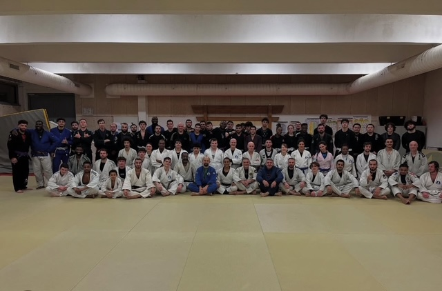
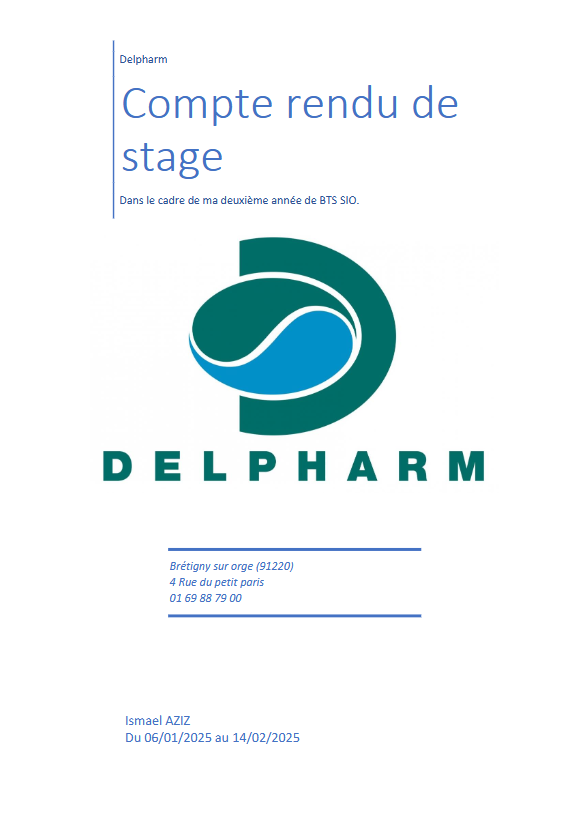
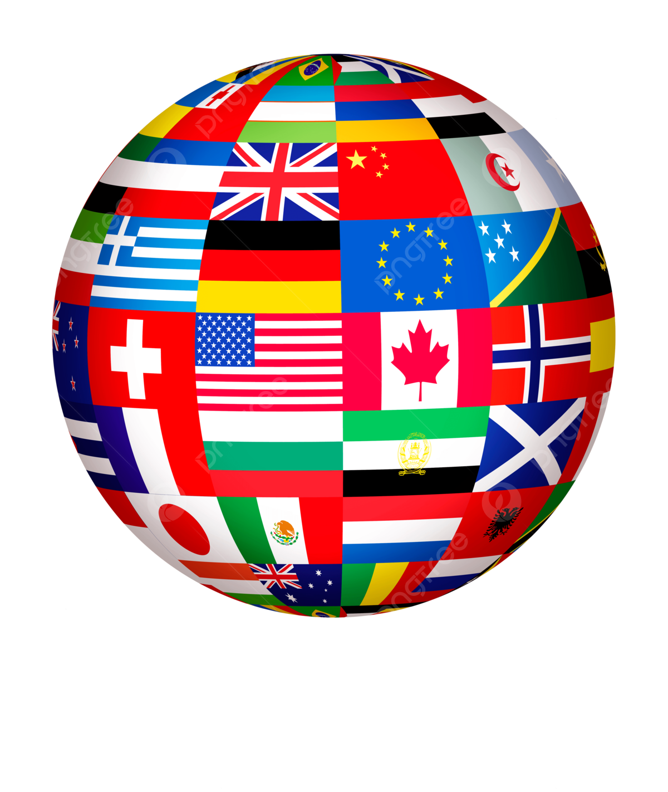
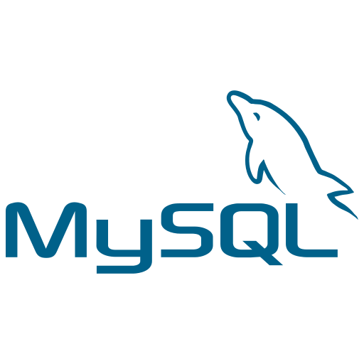
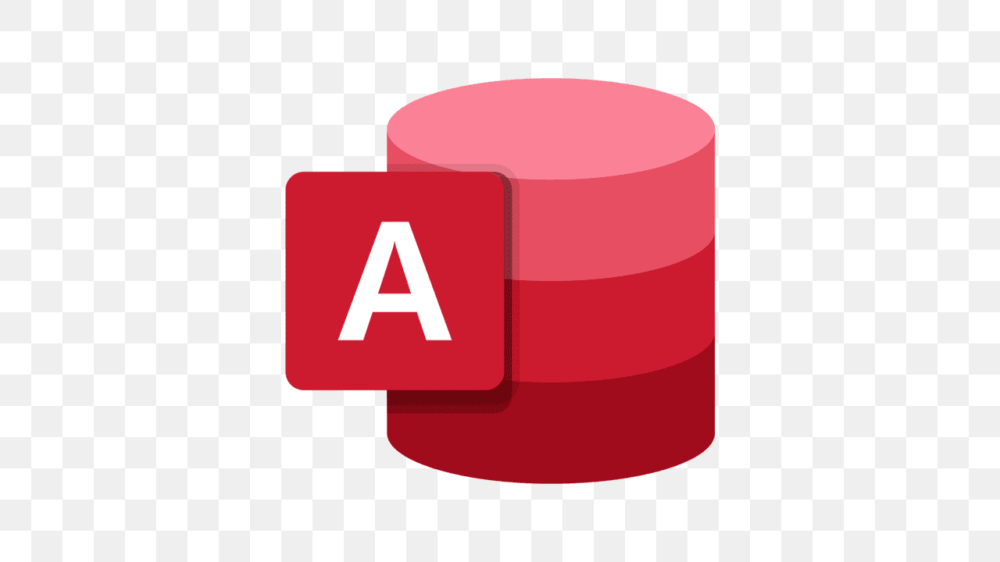

Portfolio d'Ismaël
Bienvenue sur mon portfolio ! Explorez mes projets et découvrez mon parcours.
Entrer dans le PortfolioBienvenue sur mon portfolio ! Explorez mes projets et découvrez mon parcours.
Entrer dans le PortfolioJe suis un passionné d’arts martiaux, pratiquant à la fois le judo et le JJB. Toujours en quête de perfectionnement, je mets autant de rigueur sur les tatamis que dans mes études. Actuellement en BTS SIO, je me forme aux métiers de l’informatique, alliant logique et stratégie, comme dans mes disciplines sportives. Entre technique, discipline et persévérance, je cherche à progresser aussi bien dans le combat que dans le code.

Le BTS SIO (Services Informatiques aux Organisations) est un diplôme Bac +2 conçu pour former des professionnels capables de développer, maintenir et sécuriser des solutions informatiques adaptées aux besoins des entreprises.
Il s’adresse à celles et ceux qui sont passionnés par l’informatique et qui souhaitent acquérir des compétences concrètes et opérationnelles dans ce domaine en pleine évolution.
Ce BTS propose deux spécialités :
Grâce à cette formation, il est possible d’accéder à des métiers comme développeur web ou logiciel, technicien support, administrateur systèmes, ou encore de poursuivre vers une licence ou un bachelor en informatique.
J’ai choisi l’option SLAM car ce que j’aime avant tout, c’est créer. Concevoir des applications, coder des fonctionnalités utiles, voir une idée prendre vie et devenir un projet concret — c’est cette dynamique qui me motive.
Cette spécialité m’a permis de développer mes compétences en développement web, en programmation, en gestion de bases de données et en gestion de projet. Elle m’offre un cadre pour m’améliorer, résoudre des problèmes, et construire des solutions pertinentes.
En résumé, SLAM me donne les outils pour combiner logique, technique et créativité — exactement ce que je recherchais.
Lors de mon stage de première année, j'ai eu l'opportunité de travailler sur la conception d'un site internet. Le projet a été divisé en plusieurs étapes clés, ce qui m'a permis d'apprendre l'ensemble du processus de développement web, de la planification à la mise en ligne.
J'ai commencé par la rédaction du cahier des charges, une étape essentielle pour définir les besoins et les objectifs du site. Ce document précisait les fonctionnalités, l'ergonomie, et les exigences techniques du site, permettant ainsi de cadrer le projet.
Ensuite, j'ai réalisé une maquette du site. À l'aide d'outils de design, j'ai pu visualiser l'interface utilisateur (UI), réfléchir à l'architecture des pages et à la disposition des éléments. Cette étape a permis de créer une représentation visuelle de ce à quoi le site allait ressembler une fois développé.
Après validation de la maquette, j'ai procédé à la phase de codage. J'ai utilisé des langages comme HTML, CSS et JavaScript pour traduire la maquette en une version interactive du site. J'ai appris à structurer les pages, à les styliser et à ajouter des fonctionnalités dynamiques.
Ce stage m'a permis de comprendre les étapes de conception d'un site web, tout en me familiarisant avec les outils et les technologies nécessaires pour mener à bien un projet web de A à Z. J'ai également appris à travailler en équipe, à respecter des délais et à prendre en compte les besoins des utilisateurs tout au long du processus de développement.
Lors de mon deuxième stage j'ai pris de mon temp pour fair un compte-rendu qui résume ce que j'ai fait et appris.

Voir le site réalisé durant le stage
HTML, CSS, JavaScript, PHP, Python, Kotlin, PowerShell, Angular


MySQL, PostgreSQL, Microsoft Access, SQL Server


Cisco, Windows Server, VMware, ANSSI, EDR, Directive NIS2
-1.png)
Lors d’un cours de mathématiques, une formule qu’Einstein cherchait a été mentionnée. Une formule censée expliquer TOUT ce qui nous entoure : une « théorie du tout » qui unifierait les quatre forces fondamentales de la nature (gravitation, interaction forte, interaction faible, électromagnétisme).
Avec l’intelligence artificielle qui ne cesse d’évoluer — et surtout d’apprendre — on peut se demander : l’IA pourrait-elle devenir l’outil clé des grandes découvertes à venir ?
Même si l’IA a de grandes chances de résoudre ce type de problèmes avant nous,
une autre question se pose :
sommes-nous prêts à laisser une machine créer ou découvrir à notre place ?
Einstein lui-même aurait-il utilisé une IA ?
Pour moi, l’intelligence artificielle est un excellent outil d’apprentissage, mais la création et la découverte sont des choses profondément humaines.
"I strongly feel that this is an insult to life itself."
— à propos d’une animation générée par IA
De leur vivant, ces deux légendes ont accompli sans IA ce que peu peuvent faire, même avec elle. Leur génie créatif et leur détermination montrent que la machine ne remplace pas l’humain.
Dans l’œuvre d’Eiichiro Oda, Luffy refuse les solutions faciles.
Un trésor trouvé sans effort… n’a pas de valeur.
L’IA peut accompagner, guider, apprendre... mais la passion, la créativité, et l’effort restent les piliers de l’humanité. Ne les oublions jamais.